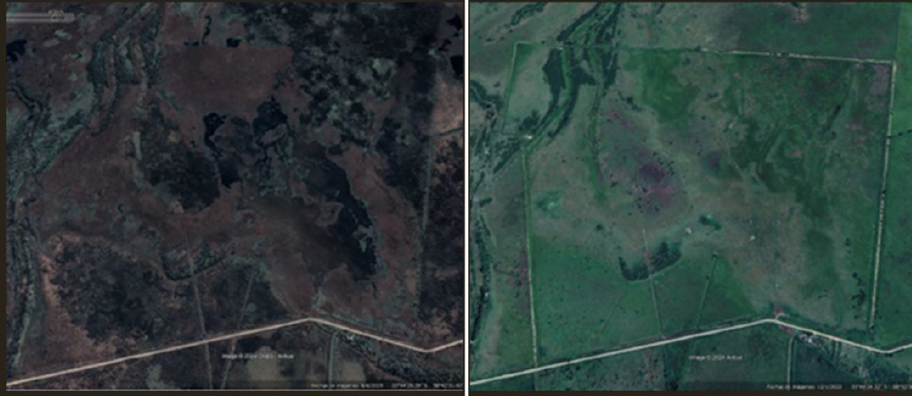
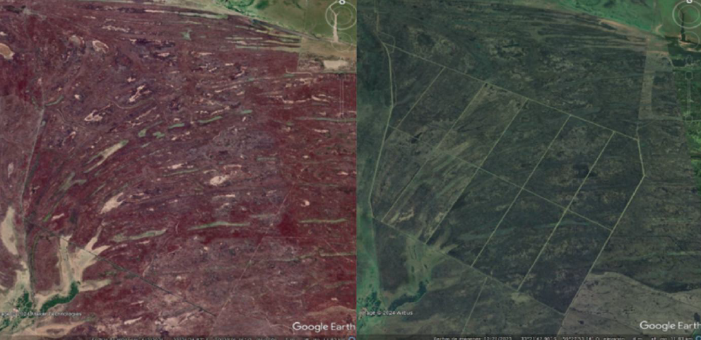
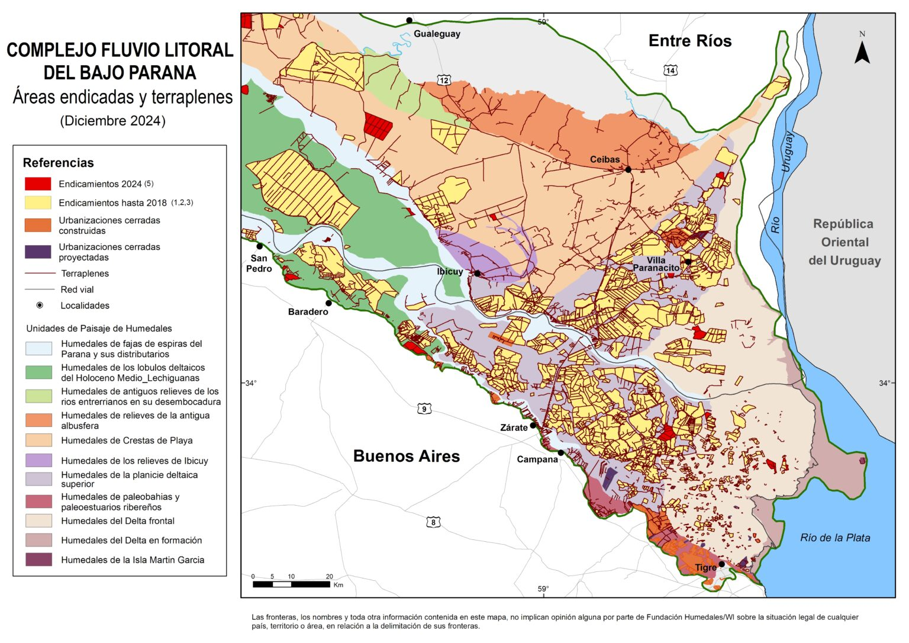

El Peaje del Agua
La privatización silenciosa de las costas en el Litoral.
Nacer en el Litoral implica crecer con la certeza de que el río siempre está ahí. Sin embargo, tocar el agua es cada vez más difícil. Una red de alambrados, terraplenes y tranqueras ha ido cercando las costas, transformando lo que históricamente fue espacio público en un club VIP a cielo abierto.
SIMULADOR DE ACCESO
Objetivo: Trazar una ruta a pie hasta el río.
NO PUDISTE LLEGAR AL RÍO
Algún privado se apropió de las tierras.
↓
La Gran Muralla del Delta
No es una metáfora, es un avance físico y medible. El último relevamiento de la Fundación Humedales encendió las alarmas: el 14% de la superficie del delta inferior ya se encuentra fragmentada de manera artificial.



Se han levantado casi 9.000 kilómetros de terraplenes para aislar barrios privados y zonas agroganaderas. La longitud es equivalente a la de la Gran Muralla China. Estas barreras de tierra monumentales se construyen con topadoras para cortar el flujo natural del agua, secar los humedales y transformarlos en suelo firme para el ganado, la soja o el desarrollo inmobiliario. Al alterar la topografía, destruyen el efecto "esponja" de las islas. El 60% de esta área endicada de forma ilegal o irregular se ubica en la provincia de Entre Ríos, modificando para siempre la geografía y la vida de las comunidades isleñas.
Paraná: una capital sin costa
En la capital provincial, la crisis de acceso llegó a un punto crítico. De acuerdo a relevamientos de asambleas ciudadanas, el 60% de la ribera paranaense, en el tramo que va desde La Toma hasta Punta del Mono, se encuentra usurpada o bloqueada por privados. El avance sobre la línea de ribera tiene casos emblemáticos que ilustran la impunidad con la que opera el negocio inmobiliario.
En el sector que históricamente formaba parte del complejo municipal La Toma, justo por encima de la popular y concurrida playa Los Arenales, hoy se erige "Puerto Barrancas". Este barrio residencial de alta gama, recostado sobre la barranca, se promociona abiertamente ofreciendo una "playa de uso exclusivo" y guardería náutica privada. Al alambrar hasta la orilla, no solo violan el Código Civil y Comercial que establece el libre tránsito por el camino de sirga (los 15 metros desde la ribera), sino que se apropian de un paisaje y un bien natural que le pertenece a los paranaenses. Mientras las playas públicas de Paraná colapsan en verano, un puñado de privilegiados disfruta de un balneario privado construido sobre terrenos usurpados al dominio público.
Desviar un río y burlar a la Corte
Si levantar muros parece grave, en Gualeguaychú el negocio inmobiliario fue un paso más allá: modificó la geografía a la fuerza y desobedecer al máximo tribunal del país. El barrio fluvial "Amarras", desarrollado por la firma Altos de Unzué SA, es el monumento definitivo a la impunidad ambiental en el Litoral. Para llenar las lagunas artificiales de su country náutico, la empresa rompió la costa, removió volúmenes gigantescos de tierra y alteró severamente el humedal del río Gualeguaychú.
El daño ecosistémico y el riesgo de inundaciones para los vecinos de la zona fue tan evidente que en 2019 la Corte Suprema de Justicia de la Nación emitió un fallo histórico ordenando recomponer el ambiente. Cuatro años después, en agosto de 2023, la justicia local ordenó el desmantelamiento total del barrio, exigiendo literalmente "romper todo" para que el río volviera a su cauce natural. Incluso, el juez rechazó de plano un escandaloso intento de pacto entre la empresa y la Fiscalía de Estado provincial para "suavizar" la condena y evitar la demolición.
¿Qué hizo la empresa desarrolladora ante este revés judicial? Ignorar por completo la sentencia. Lejos de acatar la orden de recomposición, los abogados litigantes denunciaron que la firma continuó realizando movimientos de suelo y abriendo nuevos canales artificiales en plena orden de cese. Esta burla a la justicia forzó a que el caso se asome al fuero penal por desobediencia judicial. A pesar de tener a la Corte Suprema y a los tribunales locales en su contra, el barrio sigue sin desmantelarse y la sanación del ecosistema sigue frenada en un laberinto de apelaciones sin fin documentado en el registro oficial del Municipio de Gualeguaychú.
Deslizá para comparar el plano catastral vs el desvío físico del río por la inmobiliaria. Imágenes: ATER.El golpe final: La "pampeanización"
El reciente lanzamiento de la licitación para privatizar la gestión de la Vía de Navegación Troncal (VNT) del río Paraná no es solo una obra de infraestructura: es una sentencia de muerte para la dinámica del humedal. El proyecto exige profundizar el canal de 34 a 44 pies de calado (alrededor de 13 metros de profundidad) para permitir el paso de buques oceánicos mucho más grandes y reducir los costos de exportación. Es un caso insólito a nivel global: mientras en Europa y China adaptan el tamaño de los barcos al caudal natural de sus ríos, en Argentina la política de Estado es adaptar el río a los barcos.
Llevar el canal principal a esa profundidad implica remover y dragar más de 150 millones de metros cúbicos de sedimento, arena y tierra del lecho del río. Con la destrucción mecánica del fondo se elimina el hábitat directo de los organismos bentónicos y se arrasan los sitios clave de desove y cría de peces. A esto se le suma un envenenamiento invisible: el dragado continuo libera metales pesados y agroquímicos que llevaban décadas acumulados y decantados en el sedimento. La turbidez del agua se dispara, el oxígeno disponible baja drásticamente y la vida acuática, literalmente, se asfixia.
Además, alterar la topografía del lecho cambia el comportamiento físico del agua. Al profundizar el canal central de la VNT, las desembocaduras de los ríos y arroyos secundarios quedan geográficamente más elevadas respecto al nivel del agua, lo que impide que el flujo ingrese con normalidad. El agua corre mucho más rápido por el "tubo" central y golpea con violencia contra las orillas. Esa aceleración, sumada al fuerte oleaje de los megabuques, termina erosionando las barrancas ribereñas hasta provocar su caída.
A nivel sistémico, este efecto de vaciado es lo que los especialistas denominan la "pampeanización" del Paraná. La profundidad extrema del canal central actúa como una gigantesca aspiradora que succiona el agua de los riachos y lagunas laterales, secando los humedales anexos. Al secarse, estas islas dejan de fijar carbono y el río pierde su capacidad natural de filtrar toxinas. Desaparece la vegetación y los sitios de refugio para aves y mamíferos. Menos agua distribuida en el territorio equivale a un riesgo exponencialmente mayor de incendios.
Las consecuencias socioeconómicas no tardan en reflejarse en las costas. Menos cantidad y diversidad de peces significa el fin inmediato del sustento para los pescadores artesanales y las comunidades locales. A nivel urbano, el peligro sale por las canillas: los millones de metros cúbicos de sedimentos removidos amenazan con obstruir las bocas de toma de agua de las plantas potabilizadoras que abastecen a las ciudades ribereñas.
Todo esto avanza en flagrante violación del Acuerdo de Escazú y la Ley General del Ambiente: el Estado omite sistemáticamente la presentación de Estudios de Impacto Ambiental Acumulativo de estas megaobras y esquiva el llamado a audiencias públicas, silenciando a las comunidades que sufren el impacto directo en sus territorios.
Fuente Documental
Fieles a nuestra política de apertura y transparencia de datos, adjuntamos el informe de Wetlands International (2025) utilizado para la reconstrucción geoespacial de esta investigación.